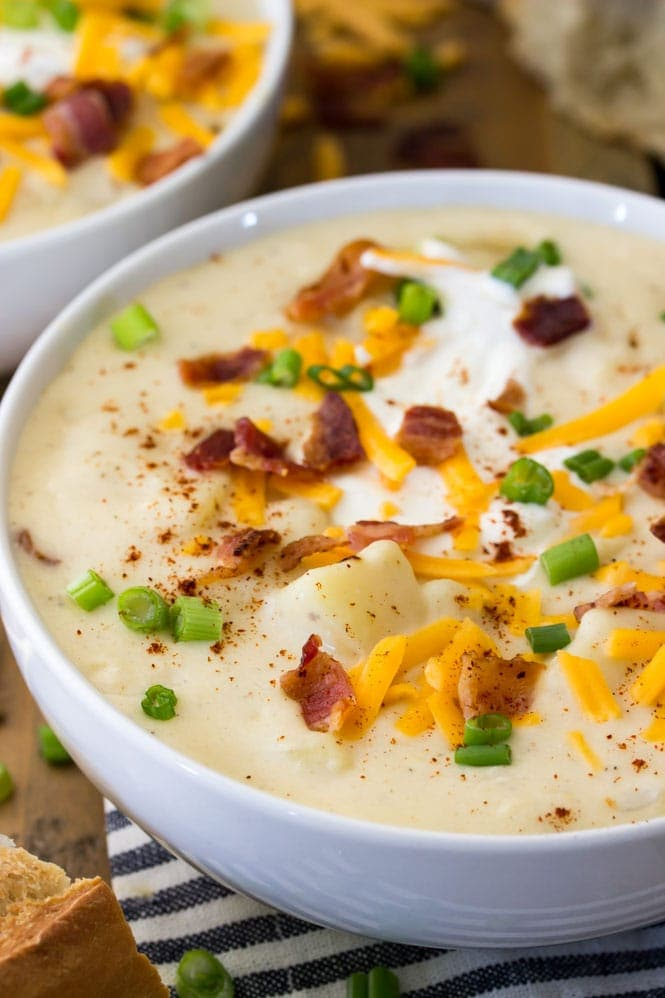

Potato Soup

Potato Soup
- 6 strips (uncooked) bacon cut into small pieces
- 3 Tablespoons butter unsalted or salted will work
- 1 medium yellow onion chopped (about 1.5 cup/200g)
- 3 large garlic cloves minced
- ⅓ cup all-purpose flour (42g)
- 2 ½ lbs gold potatoes peeled and diced into pieces no larger than 1” (this was about 6 Large potatoes for me/1.15kg)
- 4 cups chicken broth (945ml)
- 2 cups milk (475ml)
- ⅔ cup heavy cream (155ml)
- 1 ½ teaspoon* salt
- 1 teaspoon ground pepper
- ¼ - ½ teaspoon ancho chili powder
- ⅔ cup sour cream (160g)
- Shredded cheddar cheese, chives, and additional sour cream and bacon for topping optional
Potato Soup
1. Place bacon pieces (6 strips) in a large Dutch Oven or soup pot over medium heat and cook until bacon is crisp and browned.
2. Remove bacon pieces and set aside, leaving the fat in the pot.
3. Add butter (3 TBS) and chopped onion and cook over medium heat until onions are tender (3-5 minutes).
4. Add garlic (3 cloves) and cook until fragrant (about 30 seconds).
5. Sprinkle the flour (1/3 cup) over the ingredients in the pot and stir until smooth (use whisk if needed).
6. Add diced potatoes to the pot along with chicken broth (4 cups), milk (2 cups), heavy cream (2/3 cup), salt (1 1/2 tsp), pepper (1 tsp), and ancho chili powder (1/4-1/2 tsp). Stir well.
7. Bring to a boil and cook until potatoes are tender when pierced with a fork (about 10 minutes).
8. Reduce heat to simmer and remove approximately half*** of the soup to a blender (be careful, it will be hot!) and puree until smooth (half is about 5 cups of soup, but just eyeballing the amount will be fine. Alternatively you can use an immersion blender.).
9. Return the pureed soup to the pot and add sour cream (2/3 cup) and reserved bacon pieces, stir well.
10. Allow soup to simmer for 15 minutes before serving.
11. Top with additional sour cream, bacon, cheddar cheese, or chives. Enjoy!